For this part of the project, I had to take sets of photos. The sets of photos had to have projective transformations between them (rotating the camera). The images were later going to be stitched together to form panoramic images. For part 2, we had to recover the homographies between the images. I used the provided tool to manually select points in the images that corresponded to each other. I then used these points to compute the homography matrix using the Direct Linear Transformation (DLT) algorithm.
The goal is to find the 8 unknown values in the homography matrix H
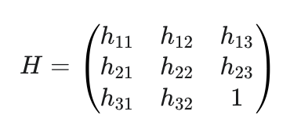
A point correspondence relates a point p = (x, y) in the first image to p' = (x', y') in the second image via the equation p' = Hp. In homogeneous coordinates, this is:
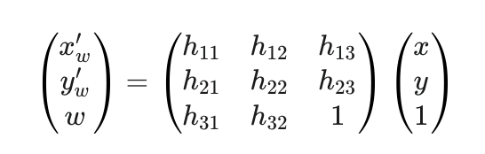
After expanding and rearranging we have grouped all the unknown h terms on one side, forming the Ah = b structure.
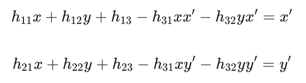
Each point correspondence provides these two equations. For n points, we can construct a 2n x 8 matrix A and a 2n x 1 vector b. The vector of unknowns h is [h11, h12, h13, h21, h22, h23, h31, h32]. The two rows of A and b for a single point (x, y, x', y') look like this:
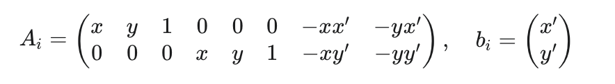
We stack these A_i and b_i blocks for all n points and solve the overdetermined system Ah=b using the method of least squares.
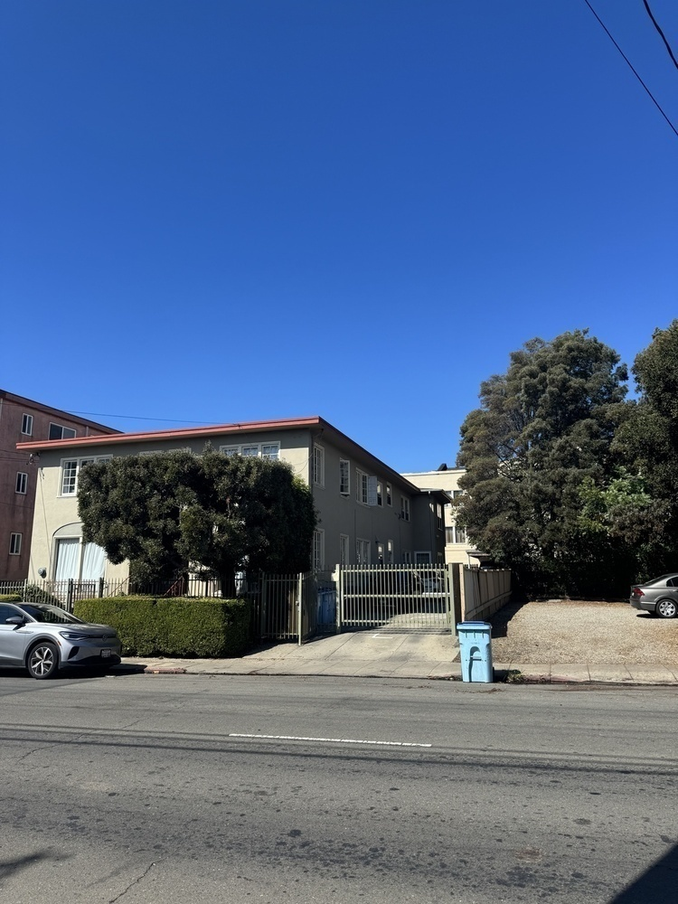
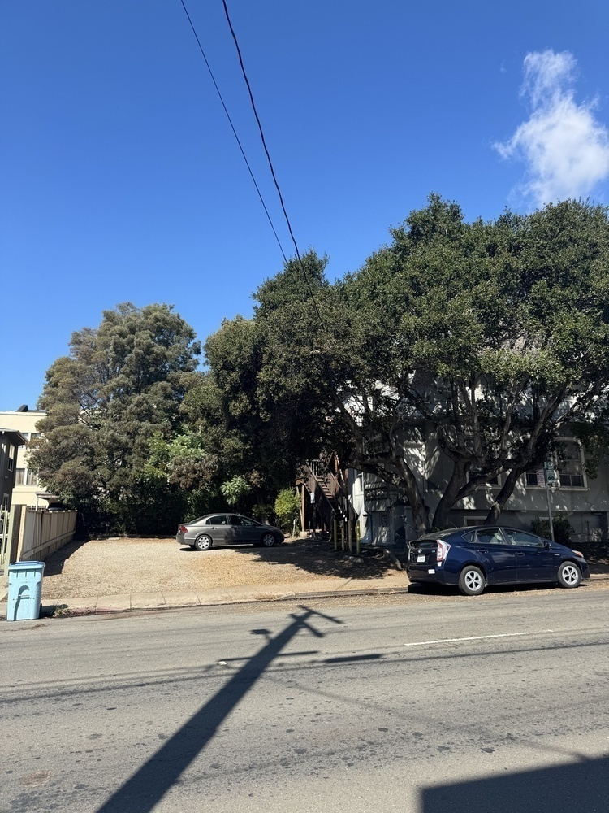
Next, we match up points and derive homography matrices
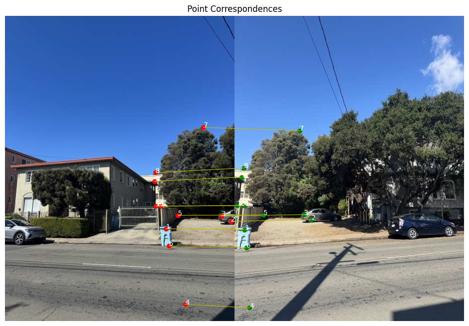
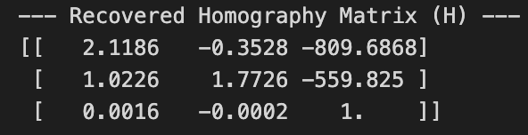
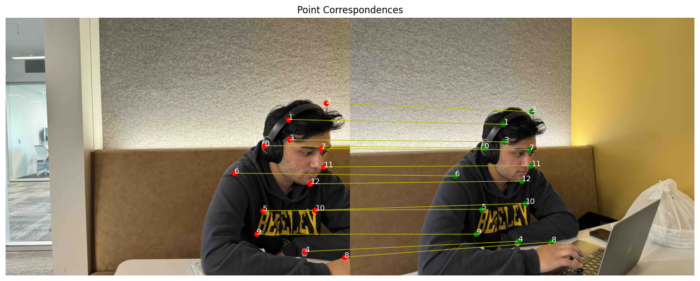
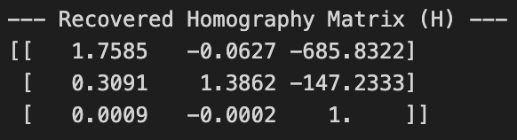
For part 3, I implemented two image warping functions: nearest neighbor interpolation and bilinear interpolation. These functions take an input image and a homography matrix and produce a warped output image. I used the method created to derive homography matrices in part 2 but on different images. In terms of differences between the two methods, nearest neighbor interpolation is faster but can produce blocky artifacts, while bilinear interpolation is slower but produces smoother results. I found that bilinear interpolation generally produced better results, especially for images with fine details. It might be difficult to see the differences in the warped images because the images are quite low resolution though.
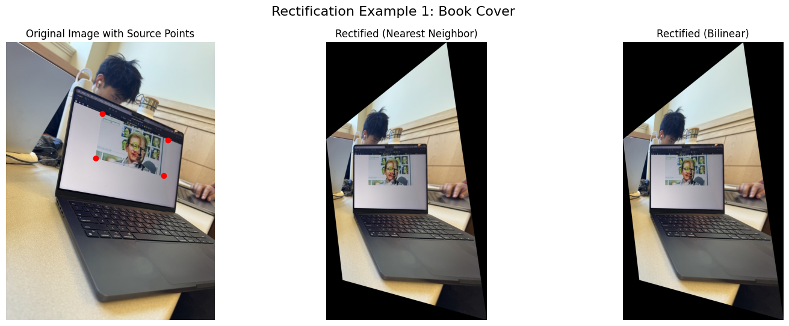
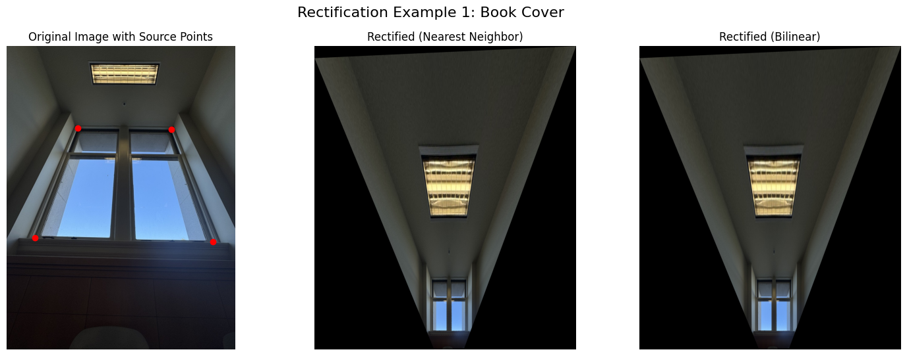
For part 4, I implemented a function to create a simple mosaic by warping one image onto another using the computed homography matrix. The function first computes the size of the output mosaic and then warps the second image onto the first image using bilinear interpolation. Finally, it combines the two images to create the mosaic. I created mosaics for seperate sets of images than those taken in part 1. The results were visually appealing, with smooth transitions between the two images. The choice of images also played a significant role in the effectiveness of the mosaics. I found that using images with similar color tones and lighting conditions produced more seamless results.
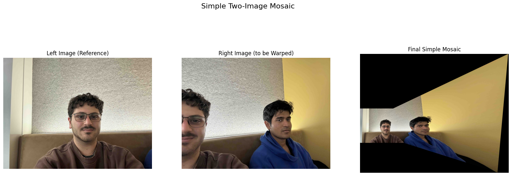
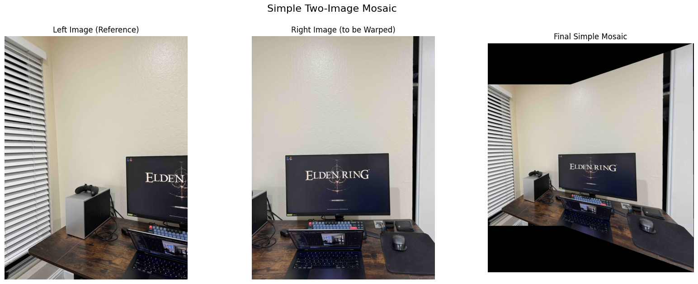
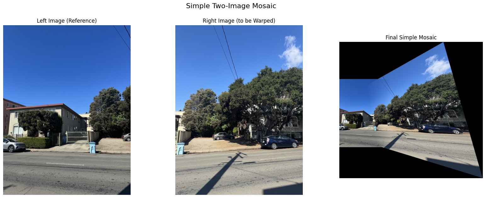
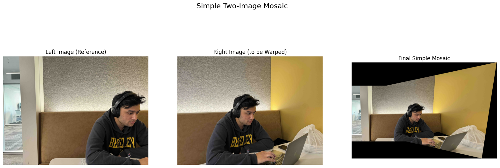
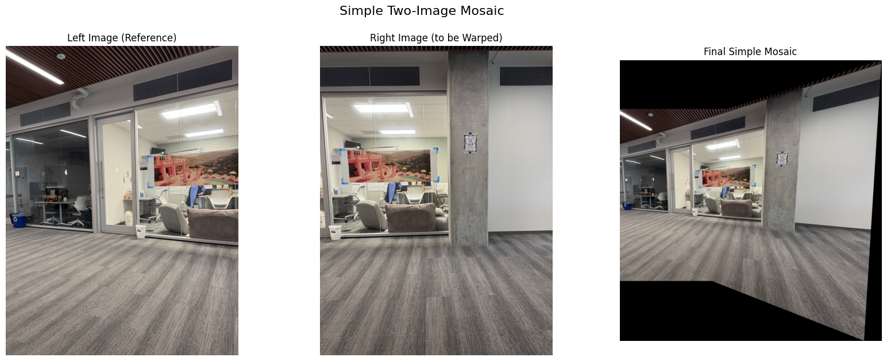